Lecture 1 - Introduction
CIVE 461/861: Urban Transportation Planning - Fall 2023
Outline
- Urban transportation: challenges & opportunities
- Defining urban transportation planning
- History & context for urban transportation planning
- Course overview
Urban Transportation: Challenges & Opportunities
Poll
Congestion

Pollution
Traffic Safety
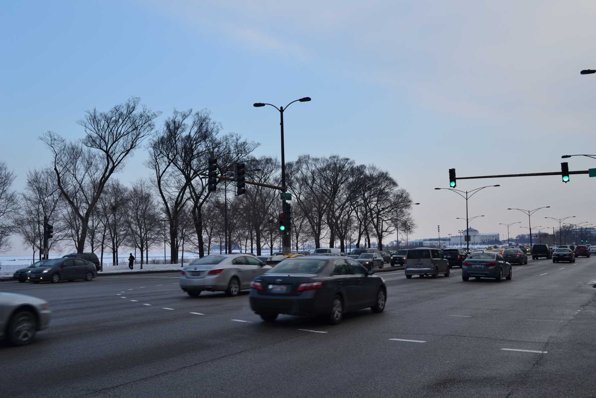

Economics
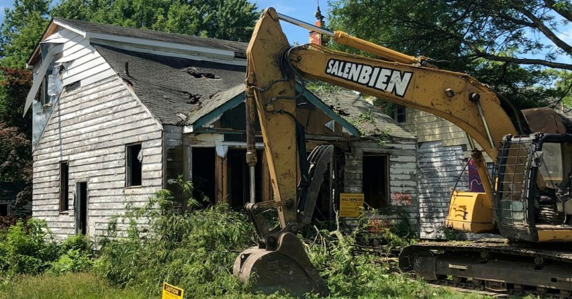
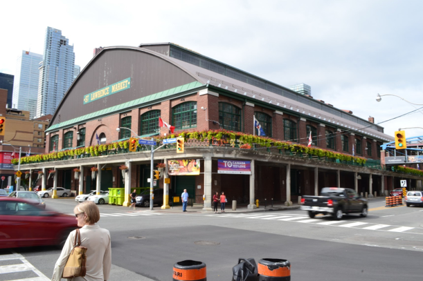
Equity & Diversity
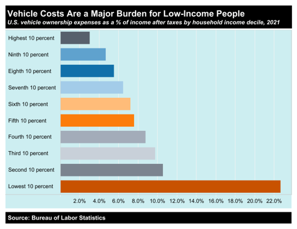 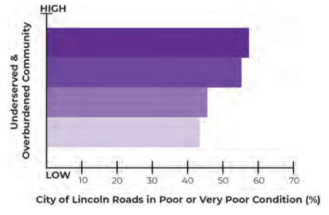
Food Desert Tracks
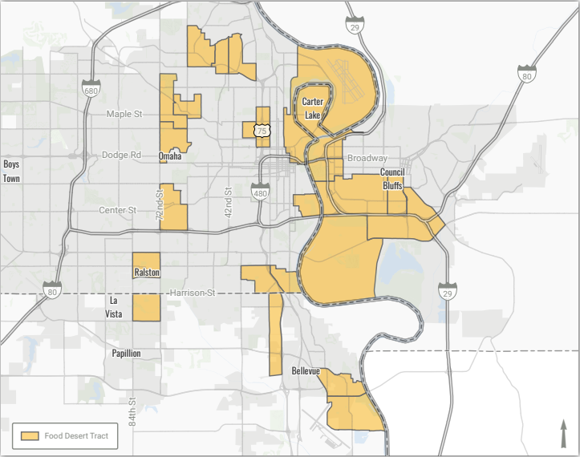According to the USDA “a residence is considered in a food desert if it is more than one mile from a supermarket in an urban or suburban areas and more than 10 miles from a supermarket in a rural areas”.
Transportation & Land Use
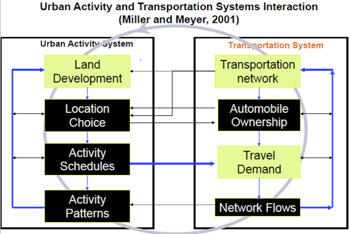
Global Trends & Urban Regions
- Globalization
- Cheap & high capacity telecommunications - reduced need to travel?
- Good transportation infrastructure enhances economic competitiveness
- Larger role of private sector in transport supply & operations
Urban Transportation: Defining The Field
Roads & Their Many Roles
| Economic | Social | Cultural |
|---|---|---|
| 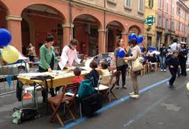 | ||
| Recreational | Mobility | |
| 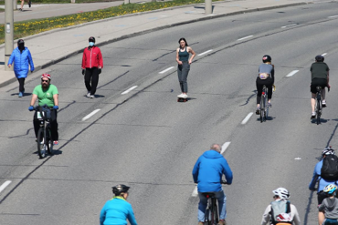 |
Transportation System Concepts
Mobility: The ability to travel from one location to another in a reasonable time for acceptable cost.
Accessibility: The ability to access an economic or social activity in a reasonable time for acceptable cost.
Transportation System Concepts
Mobility: The ability to travel from one location to another in a reasonable time for acceptable cost.
Accessibility: The ability to access an economic or social activity in a reasonable time for acceptable cost.
Transportation System Concepts
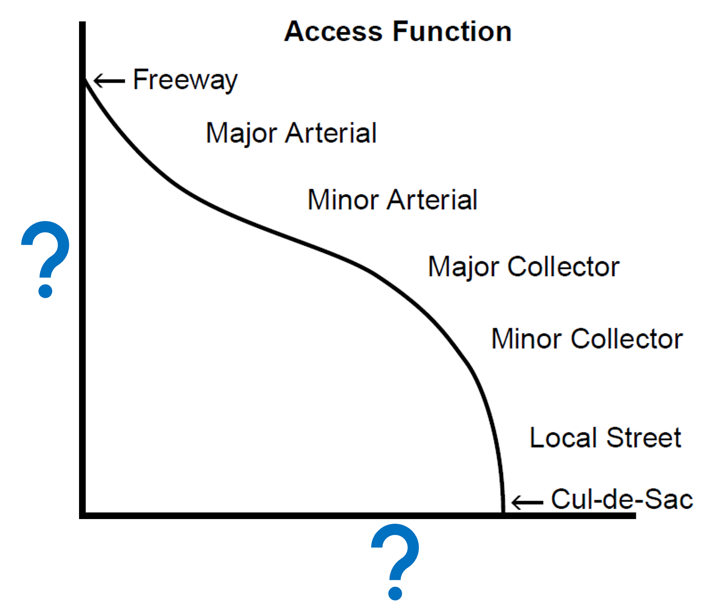Transportation System Concepts
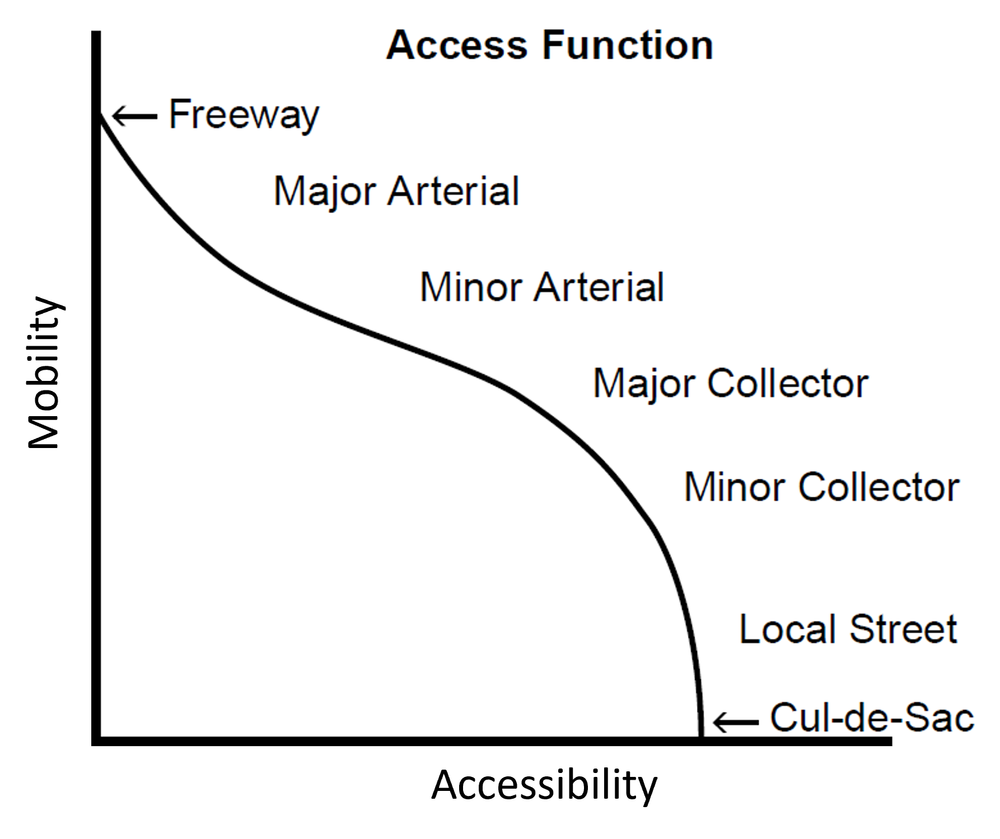Road Vs. Street
Question: What is the difference between these terms?
Road is a high speed connection between two places.
Street is a platform for building community wealth.
Stroad is a street with road design features.
Road - But is it in the right place?
Road - But is it in the right place?
Street

Stroad -> Street


Transportation as Derived Demand
- Transport demand is derived meaning it is not an end in itself – except sight-seeing
- Question: What do you think this means?
- People travel to satisfy a need at spatially dispersed locations (work, leisure, health) by undertaking an activity
- Good transport broadens opportunities to satisfy these needs – heavily congested or poorly connected system restricts options and limits economic and social development
- Transport demand is highly qualitative and differentiated
- By time of day, day of week, journey purpose, type of cargo, importance of speed and frequency
Transportation Supply
- Transportation supply a service - cannot stockpile it to use at different time of high demand
- Service must be consumed when and where produced, otherwise benefit is lost
- Supply includes fixed assets (infrastructure) & mobile assets (vehicles) - in combination with rules of operation, make possible movement of goods & people
- Often infrastructure & vehicles not owned/operated by same group
- Generates complex interactions b/w government (central & local), construction firms, developers, transport operators, travelers & shippers, & local residents
Transportation Equilibrium
- Short-term equilibrium: fixed activity system gives equilibrium points between supply and demand
- Long-term equilibrium: Levels of service changes over space and time - expect long-term equilibrium (or dynamic evolution)
- Plan for future that maximizes social welfare for all
- Question: What is social welfare to you?
Urban Transportation: History & Context
Car-Public Transit Feedback Cycle**
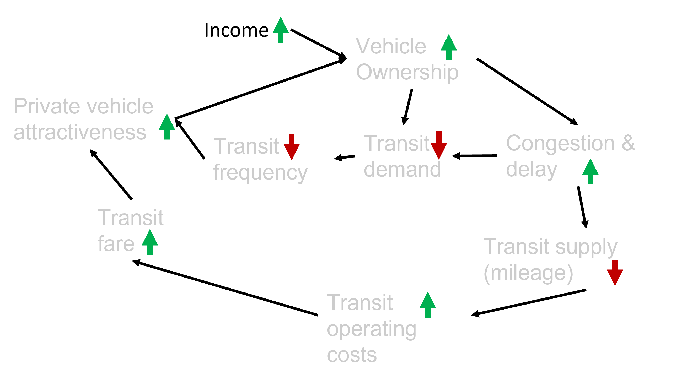
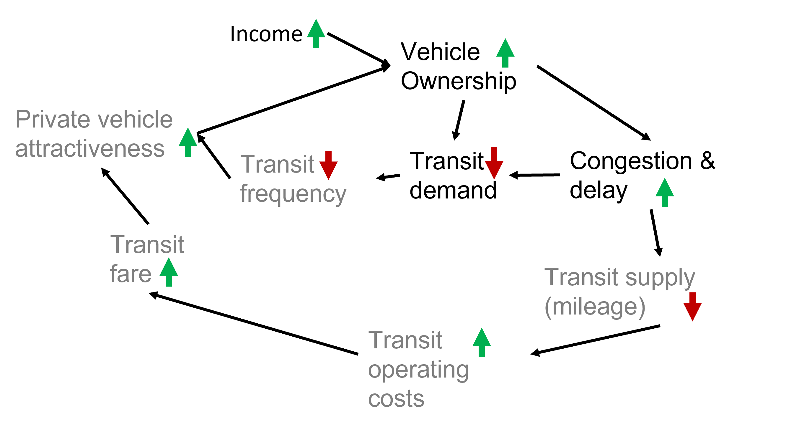
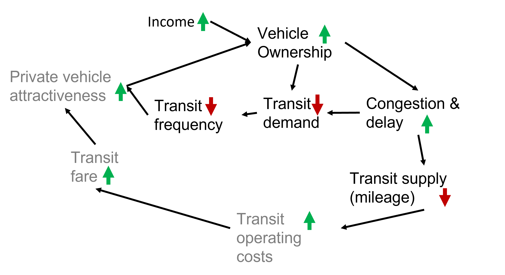
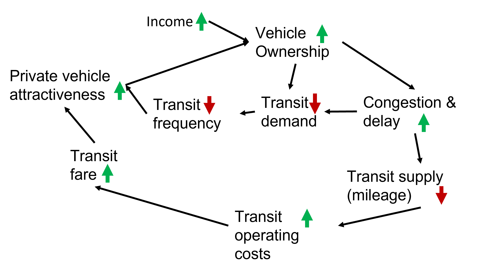
Breaking The Cycle
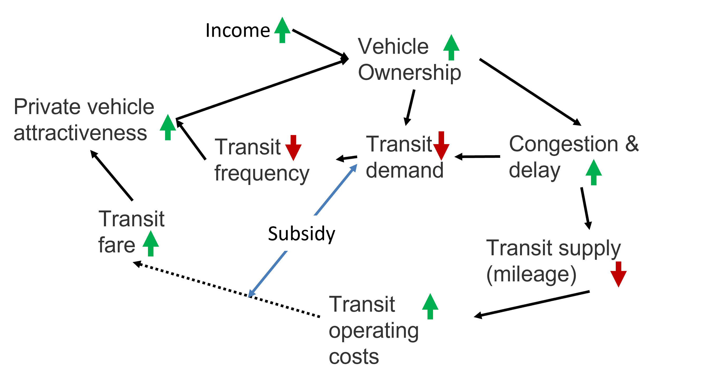
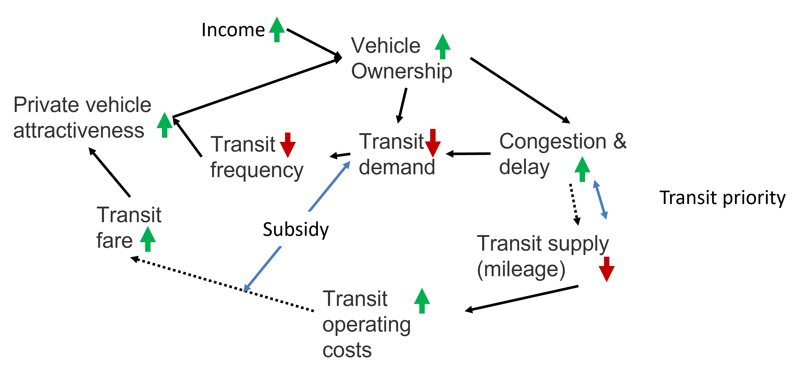
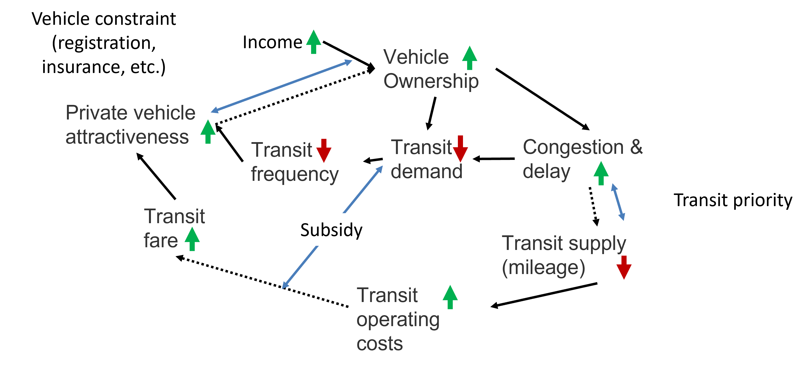
What is public transportation?
What is public transportation?
Transport Costs & Subsidies (Left-Of-Center View)
- In addition to gas tax (federal tax 18 cents per gallon since 1980s!):
- $597 per U.S. household per year in general tax revenue dedicated to road construction & repair
- $199 to $675 per household per year in additional tax subsidies for driving - e.g., sales tax exemption for gasoline purchases in many states & federal income tax exclusion for commuter parking benefits
- $216 per household per year in government expenditures made necessary by vehicle crashes, plus additional, uncompensated damages to victims and property
- $93 to $360 per household per year in costs related to air pollution-induced health damage
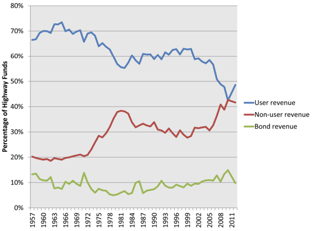
Transport Costs & Subsidies (Right-Of-Center View)
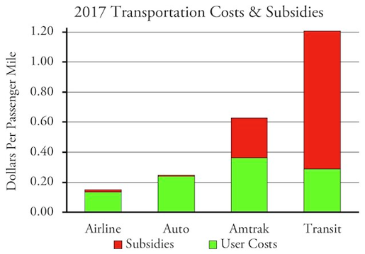
- Does not include parking subsidy
- Does not include crash costs
- Transit subsidy per mile estimated at 76% by APTA – 50% equity-justified
- Note farebox recovery ratios (user cost / total cost) can vary:
- Hong Kong MTR = 172%
- Amsterdam = 88%
- Toronto TTC = 66%
- New York MTA = 24%
- Chicago CTA = 16%
Development Trap
- Private vehicle owners choose their work & home location without considering transit availability
- Urban sprawl results: low density development more difficult to service by efficient transit
- Further congestion & higher proportion of time spent in slow moving vehicles
Emerging Economy Cities
- Population growth in many emerging economy cities will maintains demand for public transit
- Question: What about private vehicle ownership?
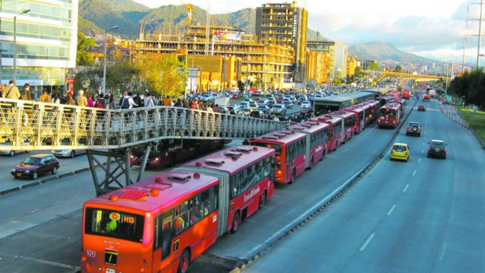
Course Overview
Role Of Theory & Data
- Both theory & data required to understand complex interations in transportation system
- Sometimes possible to derive same function form from different theoretical foundations
- Gravity model from classical mechanics
- Entropy maximization from statistical mechanics
- Maximum utility from economics
- If goal is flow measure on road links - any of above theories work
- If goal is welfare evaluation - only theory based on human behavior is helpful
Primer On Logic
- Two classical approaches to theory development
- Deductive builds a theoretical model & tests its prediction against observation (common in pure & social sciences)
- Inductive collects data & searches for general laws (common in engineering & computer science)
| Deductive Reasoning |
|
| Inductive Reasoning |
|
Primer On Logic
| Deductive Reasoning |
|
- Deductive reasoning begins from a premise that is proven through observation
- Conclusions reliable provided premises are true
- Argument “All bald men are grandfathers. Harold is bald. Therefore, Harold is a grandfather” logically valid but untrue if original premise is false
Primer On Logic
| Deductive Reasoning |
|
| Inductive Reasoning |
|
- Inductive reasoning extracts a likely (but not certain) premise from specific & limited observations
- You pull three coins from a bag & each coin is a penny
- Inductive reasoning might suggest all coins in bag are pennies
- Even if initial observations are correct, inductive reasoning does not guarantee conclusion is true
Role Of Data & Theory
- Data & aggregation
- How many population strata do we need to understand problem?
- How much detail do we need to measure certain variables to replicate phenonema?
- Space is critical in transport: what level of detail to code trip origins & destinations to model trip-making behavior?
Models & Their Roles
- We will devote large portion of class towards developing models
- Model is simply representation of part of real-world system of interest
- Model may be physical or abstract
- Physical models used in architecture & fluid mechanics
- Abstract models are mental models used in daily interactions with world - formal & abstract (typically analytical) representations of theory about system of interest/how it works
- Mental models important & enhance discussion, training, & experience but difficult to communicate
Models & Their Roles
- We will focus on a class of abstract models: mathematical models that replicate system behavior via mathematical equations based on theory
- Models provide common ground for discussing policy and outcomes with a level of objectivity
- Engineers/planners can learn much about a system from the formulation, calibration, and experimentation with a model (not even use)
- Mathematical models can help hone mental models and mean more intelligent management of transport system
- Models (mental) are inevitable but formal models are desirable
Models & Their Roles
- Computers can make error-free calculations BUT humans are error- and bias-prone 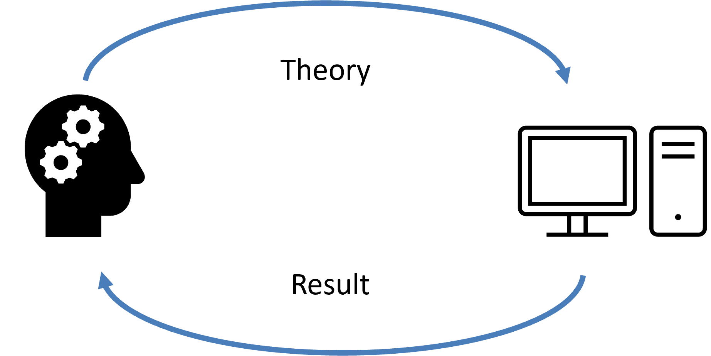 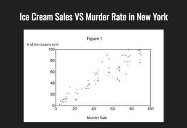
Transportation Planning (and CIVE461) Focus Shift
Field is shifting towards methods that are more human-centered and realistic and away from the mechanistic methods adopted from physics analogy
Focus on time, geographic space, social space, and institutional context
We ignored complexity, non-linearity, and uncertainty in past approaches
Traditional viewpoint of transport experts and policy makers is that transportation systems exist to provide for the safe and efficient movement of people and goods in an environmentally responsible manner
Transportation Planning (and CIVE461) Focus Shift
- Decisions historically reserved for technical experts with very little (if any) public input
- In the 1970s, mainly because of the oil crisis, attention was also paid to managing the transportation system as a system of interconnected components
- Realizing increased capacity is not sufficient to satisfy increasing demand for services, policy analysts and policy makers shifted their attention to a more efficient management of facilities (e.g., utilize the capacity of a highway by spreading its use over the day)
- New construction reserved for strategic interventions such as the provision of connectivity among existing roadways
- Shift of policies away from expanding capacity to managing demand and the introduction of a systems approach to transportation has been advocated since the late 1960s – yet not adopted by many engineering undergraduate programs…
Transportation Planning (and CIVE461) Focus Shift
- More recent perspective: integrated and systematic view
- Economic and social development role
- Private automobile can be examined in a more critical way and contrasted with many other mobility options that may yield the same benefits but at lower social costs
- At the core is provision of access to activities and services for all (equity principle)
- Unfortunately, priority in transport policies has been given to higher mobility (ability to move) instead of higher accessibility (ability to reach locations and opportunities)
- Since mobility is “purchased,” specific groups of the urban or rural population do not have adequate access to basic services
- Yet, they are burdened with the costs (e.g., health, taxation) of mobility
- I have re-focused CIVE461 to provide you with the tools and knowledge to compete in the current transportation workforce
Workforce Trends
- Multi-modal transportation planning
- Complete Streets – Nebraska DOT focused on it for small communities
- Larger datasets = Excel -> R & Python
- Non-infrastructure solutions – ridesharing, autonomous vehicles, pricing, and land use reform